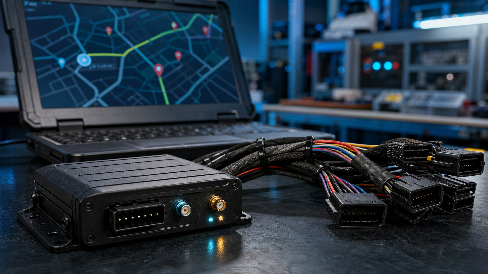

Telematics

GPS/GSM Fleet Tracking Rollout
Installed and supported more than 50 tracking units, connecting field assets to cloud-based monitoring with real-time diagnostics.
- Systems
- GPS, GSM, cloud platform
- Value
- Asset visibility and faster fault response